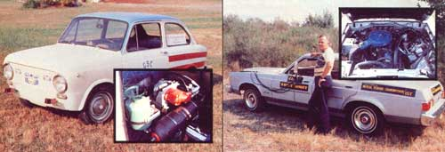
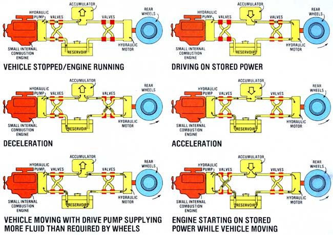

The Good News is that Vincent Carman's new transmission can double your car's gas mileage. The Bad News is that-thanks in part to bungling by the U.S. Government's Energy Research and Development Administration (ERDA)?it may be decades before this fuel saver is on the market.
Portland, Oregon's Vincent Carman is an honest, straightforward guy ... and the revolutionary automobile transmission he's invented is the same kind of animal. It's a simple, straightforward combination of off-the-shelf components that don't do a blessed thing ... except simply and straightforwardly double the gasoline mileage of a passenger car or other internal combustion engine-powered vehicle.
Getting this new fuel saver developed and put on the market, however, is proving to be a somewhat more devious and complicated breed of cat.
It would be easier to understand Mr. Carman's current development and marketing frustrations if his new piece of equipment was merely a vague daydream that he'd sketched out on a place mat in a greasy spoon restaurant somewhere. But it isn't.
Vincent's Inertial Storage Transmission (IST) is already in its third or fourth generation of development, it has been endorsed by the National Bureau of Standards and championed by Senator Mark Hatfield and Congressman Robert Duncan, several versions of the transmission have actually been road tested, and the U.S. Postal Service is interested in equipping a whole fleet of vehicles with the IST ... just as soon as ERDA conducts some "independent" tests on Mr. Carman's invention.
And there's the rub. Because-thanks to a set of circumstances that occasionally seems as implausible as the script for a 1927 slapstick comedy-there sometimes doesn't seem to be much chance that those tests will ever get underway.
Vincent Carman's Inertial Storage Transmission does just what its name indicates: It stores energy that would otherwise be wasted during the many times an ordinary automobile is stopped with its engine running (in heavy traffic, while waiting to pull onto a freeway, at red lights, etc.) ... and then draws on that stored energy when it's needed to propel an IST-equipped vehicle down the pike.
More specifically, the IST [1] allows a passenger car or other internal combustion engine-powered vehicle's powerplant to run-when it runs-at a fuelsaving optimum and constant speed ... no matter how much the vehicle itself is accelerated, cruised at varying speeds, brought to panic stops or otherwise operated, [2] accumulates and stores a great deal of the energy that is normally "thrown away" any time a vehicle is parked with its engine running, [3] captures and saves a great deal of the energy that is normally dissipated as brake shoe heat when a vehicle is decelerated and/or stopped, and [4] will even automatically turn a vehicle's engine completely off and leave the machine cruising silently down the highway on nothing but stored power under certain conditions!
Although the sensors and "brain'' which control these activities are complex, the actual hardware which does all the work is a very simple hydraulic system. If you'll look at the diagrams which accompany this article, you'll notice that the whole transmission consists of little more than a hydraulic pump (directly driven by a vehicle's engine), a pressure accumulator (which is where all the energy that would otherwise be wasted is stored), a reservoir (in which "extra" hydraulic fluid is kept until it's pumped into the accumulator), a hydraulic motor (which is what actually drives the vehicle's rear wheels when oil from the accumulator tank is pumped through it), and enough plumbing and valves to connect these major components together properly.
A typical "spin around the block" in an IST-equipped automobile isn't really any different from the same trip made in an ordinary car. No different, that is, up in the passenger compartment. Under the hood and along the vehicle's drive line, however, some most unusual-and gasoline savingactions will constantly be taking place.
If the IST-outfitted machine had been parked with an appreciable amount of pressure still in its accumulator, for instance ... you would get into the vehicle, turn on its key, step on the accelerator, and start moving down the road just as you would move in an ordinary automobile. Except for the fact that you'll be driving on "old" stored energy, and your car's engine won't even have started yet! (No wonder that acceleration is so smooth ... and so quiet!)
Nor will the internal combustion engine be started until the IST-equipped vehicle has traveled some distance down the road. How far? As much as it takes to bleed the stored hydraulic pressure in the IST accumulator tank down to a predetermined and pre-set minimum level. At that point the gasoline engine will be started automatically (you probably won't know-nor do you even need to know-when this happens). It will not, however, be started in the usual way (with electricity from a battery spinning an electric starter which, in turn, cranks over the internal combustion engine). Instead, some of the remaining pressure in the accumulator will be piped through the hydraulic pump that is directly attached to the engine, and-as the pump spins- it will act as the gasoline engine's starter.
Pretty clever, this invention of Vincent Carman's! But that's only the beginning of the fuel-stretching tricks that the Inertial Storage Transmission has up its sleeves. For example:
When you come to a red light and remove your foot from the accelerator ... you will not also have to step on the brake (which is left in an IST-outfitted car mostly as an emergency backup for the automatic braking action built right into the Inertial Storage Transmission itself). What happens, you see-as soon as you let up on the accelerator-is that the hydraulic motor which has been driving the rear wheels to make your vehicle move down the road ... that hydraulic motor is instantly converted into a pump. It no longer drives the wheels. Instead, the coasting wheels begin to drive it. And as this hydraulic unit is turned, it just like the pump attached directly to the car's internal combustion engine-begins to force more and more pressure into the IST accumulator.
This action, of course, puts a considerable braking load on the coasting wheels which means that two very desirable things are being accomplished at once: [1] your car is being smoothly brought to a halt, and [2] as it is stopped, the vehicle's dissipating kinetic energy is not being wastefully spewed into the atmosphere as brake drum heat. Instead, it's being accumulated and stored in a form that you'll be able to use to make your car move once again when that red traffic light-which stopped you in the first place-turns green.
Don't forget that your vehicle's prime internal combustion engine is not being slowed down and left to kick over at an inefficient, gas-burning idle all the time you're sitting there waiting for that light to change, either.
Rather, it's allowed to keep right on running at its most efficient rpm-for as long as necessary during your deceleration and the time you're halted-until the pressure in the IST accumulator has been raised back up to a pre-set maximum level. At that point and only at that point (and, again, without your knowing or even needing to know that it's happening) your car's engine will be shut off automatically. And it will then remain shut off until the pressure in the IST accumulator is again bled down to its preset minimum level.
Chances are, then, when that light finally does turn back to green and you glide off down the road once more, you'll begin to move the same way you did when this trial spin started. That is, you'll accelerate and go some distance before your vehicle's engine is again started.
What this all means is that your carin heavy stop-and-go city traffic-can be operated as much as 80% of the time ... on stored energy and with its engine shut off! And if all the other cars around you were also equipped with Inertial Storage Transmissions ... just think what that would mean in terms of soaring gas mileage and plunging levels of internal combustion engine air pollution!
Why, then, doesn't everyone have an IST in his or her car? Certainly not because the concept hasn't been proven.
Vincent Carman's first Inertial Storage Transmission was installed in a Fiat 850 and the little automobile was then driven over the same 3/4-mile stop-and-go course that it had been driven over while it was still equipped with its regular transmission. Result: The Fiat, when operated as set up at the factory, burned 200 milliliters (a shade over 3/4 cup) of fuel during the test ... but only 98 milliliters (less than half as much) gasoline when run as an IST vehicle.
Vince has also installed an Inertial Storage Transmission in a Ford Granada. When tested in city traffic alongside an identical-but-unmodified Granada ... you guessed it: The stock car gets 20 miles to the gallon, while the IST car rolls up 40 miles per gallon. An IST-equipped diesel Volkswagen Rabbit will soon be on the road too, and it'll be interesting to see just how far Mr. Carman's transmission can stretch that car's already superior mileage. In the meantime, though, Vince has already convinced some of our federal government's heavyweights that he's onto something good.
The National Bureau of Standards, for instance, has evaluated the IST and found it to be "technically valid" enough to recommend it to ERDA for "appropriate government support". That referral becomes even more impressive when you know that the NBS has made this sort of recommendation for only 22 of the some 4,300 energy inventions it has looked into.
It is interesting, too, that Mr. William Hullgeneral manager of research and development for the U.S. Postal Service -has witnessed the operation of Vince's IST-Granada . . . and that, as a result, the Postal Service is interested in testing the transmission on an entire fleet of vehicles. Just as soon, that is, as the Energy Research and Development Administration runs an "independent" test on the unit.
Which is exactly where the plot begins to thicken.
Because, according to Vincent Carman, ERDA was notified about the development of the IST two years ago and, since then, has done little about the invention but "get in the way". Carman, in fact, claims that not only has ERDA not conducted those independent tests of his transmission yet ... but it didn't even acknowledge the transmission's existence for a full six months after receiving the National Bureau of Standards recommendation of the unit. And ERDA only admitted its knowledge of Vince's work then because of pressure applied by Senator Mark Hatfield and Congressman Robert Duncan.
At that, Carman still doesn't know whether to laugh or cry at the "recognition" for his development that Hatfield and Duncan squeezed out of ERDA. The Energy Research and Development Administration's report consisted of a short one and a half pages which rejected Carman's unit as something that is too expensive, unable to achieve the fuel savings claimed for it, and unacceptable to the auto industry (MOTHER's emphasis).
What does this mean ... really? How can ERDA flatly pass such a judgment on an energy-saving transmission it has never even tested? Especially when others (including representatives of the National Bureau of Standards and the U.S. Postal Service) who have seen the unit demonstrated ... say that it does live up to its claims?
Vince Carman thinks ERDA wants to ignore his work-or worse, actually suppress it-because of the agency's commitment to another energy-efficient vehicle technology. ERDA has already spent at least $200,000 on a feasibility study of flywheel storage systems for vehicles and has earmarked three years of further development and $4.5 million to put a prototype on the road. The agency also shares a contract with the Department of Transportation (which, likewise, is interested in flywheel energy storage and has spent five years and $300,000 trying to convert a Ford Pinto to such a system) to supply flywheel vehicles to the city of New York.
[And by the way, where does bankrupt New York City get the money to throw around on such a goose chase? This is beginning to sound like one set of government con men conning another set of government con men into greater and greater flights of fancy - all at tax payers' expense, of course - while the lone, levelheaded genius with the real answer that everyone wants is left to cool his heels on the sidelines. -MOTHER.]
ERDA spokesmen, on the other hand, say that they're not committed to one type of energy-efficient vehicle (their unproven flywheel-storage car) any more than another (Carman's proven Inertial Storage Transmission automobiles which are running right now). They even admit they initially mishandled the whole IST situation and say they'd love to test Vince's cars now. The only trouble is that they just can't get Vince to agree on an acceptable location for that demonstration (the now-wary Carman insists that the test be conducted in Portland).
So where does that leave all the rest of us?
Well, the automobile companies certainly aren't beating Vince's door down for rights to manufacture his fantastic fuel saver. Apparently they'd rather not be bothered with tooling up for Carman's transmission and redesigning their auto bodies around the new drive system because that'd cost a lot of money and depress their profits for a few years.
And you-all you good people who'd like to cut your use of petroleum in half for the sake of both the environment and your pocketbooks-well, unless you're enough of a mechanical wizard to figure out how to construct and control an IST system of your own ... it leaves you just waiting.
MOTHER staffer Travis Brock called ERDA and talked to a Mr. Jerry Black ... who told him that Vincent Carman first presented his new transmission concept to the Environmental Protection Agency, and that the EPA referred Vince to ERDA in July of 1975. At about the same time, however, Congress decided that the National Bureau of Standards should screen all energy-related inventions before ERDA became involved with them.
For that reason, Carman and his transmission were passed right on to the National Bureau of Standards. And the NBS, after looking the idea over, passed Vince back to ERDA with a report that said the IST would save half of all the oil we import from the Arabs if it was installed on all the vehicles used in our urban traffic.
ERDA's people then said that such a figure couldn't possibly be right and ran some calculations of their own ... calculations which showed the IST would save only 3% of U.S. imported oil. This report was passed around the agency's lower levels where it was considered the end of the whole affair by most of ERDA's personnel ... until one of the higher-echelon people in the agency stumbled onto the paper. "Hey, wait a minute," he said. "It doesn't matter if this thing saves 50% or 3% or only 1% of the oil we import. It's our responsibility to get this transmission tested and that's what we should do. "
ERDA then contacted the Jet Propulsion Lab in Pasadena, California and asked it to investigate the performance of the IST. Carman, however, refused to take one of his cars to California. ERDA next got in touch with a test lab in Portland (Mr. Black implied that it was the only facility in the area with the capability of handling such work) ... but, due to some internal problems, that particular facility won't be able to evaluate the Inertial Storage Transmission for another 15 to 18 months.
Mr. Black also stated that he had heard via the grapevine that the hydraulics shop which did much of the work on Carman's current prototype has a $20,000 lien on the automobile and refuses to let it leave the Portland area. ERDA feels that this may be one of the reasons for Vince's inflexibility about the location in which his prototype is demonstrated to the agency. ERDA, according to Black, has even checked with its lawyers to learn if there is any legal way it can pay off the lien against the IST prototype so the auto can be moved to California and tested. "No," the lawyers have decided, "there's no legal way that public money can be used to pay off Mr. Carman's private debt."
Mr. Black further noted that ERDA gets a letter almost every day from Mr. Carman ... and that the agency has trouble just keeping up its end of the correspondence. According to Jerry Black, though, ERDA does feel that the Inertial Storage Transmission is technically credible and the agency believes that Carman's demonstrations are honest. Mr. Black says he is confident that, sooner or later, the JPL tests will confirm this and that, sometime in the future, the Postal Service will get its fleet of IST-equipped vehicles.
After visiting Mr. Carman in Portland, seeing his current prototype, preparing the main body of this article, and talking by phone to ERDA's Mr. Black ... MOTHER's Travis Brock called Vince and questioned him further about the Energy Research and Development Administration's proposed Pasadena test of his transmission.
Carman replied that the Jet Propulsion Lab (which ERDA wants to evaluate his unit) has been doing work on a flywheel system (the idea that is directly competitive with his energy storage system) and he doesn't trust the people at JPL to give his transmission a fair shake. And that's the reason, he says, that he insists the ERDA demonstration must take place in Portland.
Vince also mentioned that he's now selling stock (the second issue) in an effort to raise $200,000 which he needs for further development of the IST ... and for testing the system in some transit buses!
Mr. Carman says the stock is selling well and that he "expects this thing to break wide open" once he gets his ISTequipped diesel Volkswagen Rabbit on the road. When asked what he means by "break wide open", Vince said that "once people see this thing being driven all over the U.S., they'll raise such a ruckus demanding cars with IST transmissions-which will only add $200 to $300 to the cost of a new car-that both ERDA and Detroit will be forced to give the system serious consideration."
Scott Burns is a columnist for the American Boston Herald and Mr. Burns has followed the IST story in his column for some time. In his very first column on the subject, in fact, Scott even accused ERDA of intentionally suppressing Vince Carman's Inertial Storage Transmission.
Mr. Burns seems to have mellowed on the subject, though, and now has what appears to be a more philosophical view of the whole Vince Carman/ERDA affair. "ERDA's people," he says, "are not really conspiring to snub Carman. They're just bungling idiots."
|
 PHOTOS BY MARTIN FOX LEFT: The IST Fiat and IST components (inset). RIGHT: Mr. Carman's IST Granada has a few extra hoses under the hood. |
 PHOTOS BY MARTIN FOX |
|